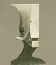
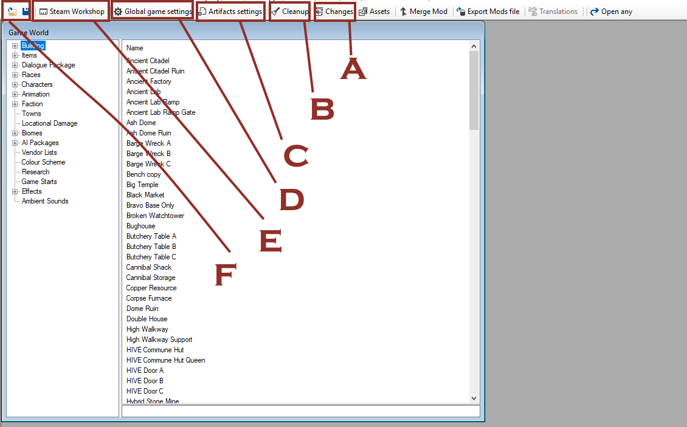
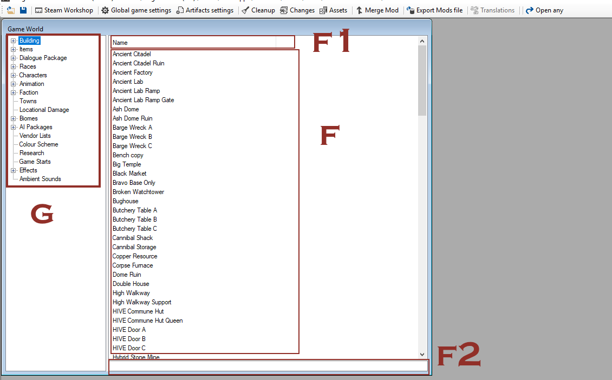
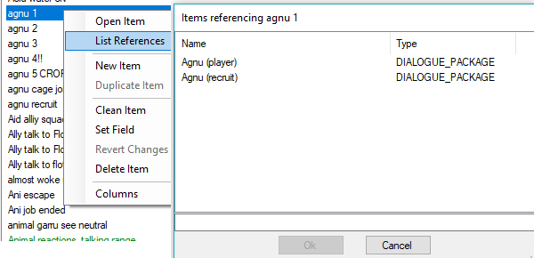
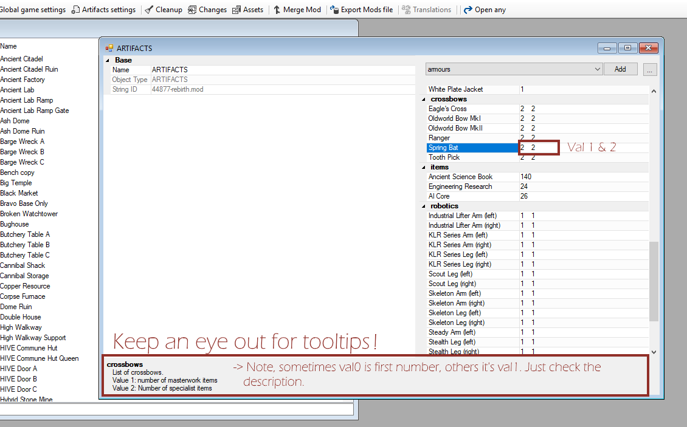
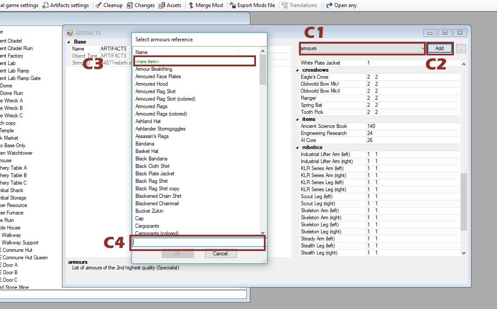
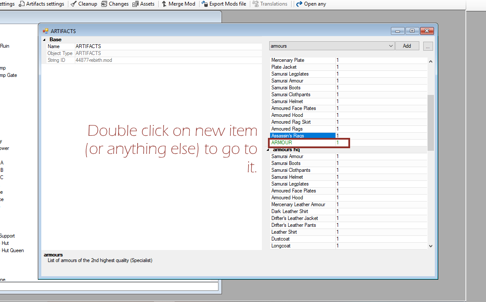

Boron and Gorax
Human! Let me share my wisdom!
I have valuable knowledge to import!

Ugh. As if the HUMAN could understand ANYTHING...
Go home, no-hiver!
Quiet!
Welcome, human, to Boron's Authentic Kenshi Modding Tutorial!
*Cough* *Cough*
/LAUGH/
Silence, you fool! Do the......THING!
***FANFARE MUSIC***
...
BORON'S AUTHENTIC KENSHI MODDING TUTORIAL
Nosy one, aren't you?
SUPPORTING MOD
This guide comes with a supporting mod that can be found here. Import the mod into your fcs, open it up, and look at the examples given there for much of how dialogue works. There are also some exercises, but leave those for later. Lastly, the dialogue contains all of the content made during the tutorial process - you can see it in the fcs; and you can try it out by starting a new game and selecting the 'Boron's Bar' start.
EDIT: To import a mod into the FCS, first find the mod folder. Steam conveniently dumps things in folders that are numbered-only, but the directory you want is ...steam/steamapps/workshop/content/233860/
-> find the folder numbered '1444748032', and copy it to ..steam/steamapps/common/Kenshi/mods
-> rename the folder from the number to the name of the file inside it (NewTownsMod)
=> You should now be able to load the mod in the FCS
FCS: The Basics
Human! To begin, you must understand the FCS modding tool. Only the brightest and most gifted among you will understand the wisdom that I impart.
If you should count yourself among them, then consider yourself lucky...the rest are jus' bug juice-swillin' GARRU herders...
Way to kill it dead straight away, ya peg leg!
CONSIDERATIONS
Whatever you do, there are several steps you should consider to ensure that you don't accidentally do something you don't want to.
- Make SURE you're editing the right mod file. If you load multiple, you can edit items and stuff from other mods, but those changes will be saved to the currently-active mod! You can see what stuff the active mod does by pressing 'changes' at the top panel, or by looking for green and blue entries.
- Consider uploading your mod to the Steam Workshop right away, even as a private file. That way, you've got a secure backup that you can download easily. Note that you have to start the FCS from within Steam in order to upload anything to the workshop.
- It's good practice to create a separate mod for a town that you want to create. That way, if anything goes wrong when building the town (which is rare, but can happen), you won't have messed up the rest of your mod.
TIPS
- You can list the references to things to see where they're used by right-clicking and selecting 'list references'. For instance, if you've got a dialouge packet and you want to see who uses it, this is how you'd find out.
- If you're stumped as to how to do something that you know is in the game, then find the thing you want to do and pull it apart
- You can freely mess around with variables to see what they do, either by creating a separate mod with no other purpose, or by using the changes list and right-clicking, selecting 'revert' when you're done.
- If you're still stumped for an answer, ask around. You have plenty of options - Kenshi subreddit, Steam forums, Lo-fi forums (Kenshi developer), Kenshi Discord channel, THIS guide (comments), etc
- If you STILL can't get an answer, then you can try and test things out for yourself. For instance, for dialogue, it is good to make a full packet that tests a variety of triggers and conditions, reporting no other dialogue other than what is happening. More on that in the guide.
STARTING THE FORGOTTEN CONSTRUCTION SET (FCS)
The FCS is a program with which you can alter Kenshi's game data. To start it, you can either:
- Start the game from Steam and select 'Launch Game Editor'
- Navigate to the Kenshi directory and launch the FCS from there (.../steam/steamapps/common/Kenshi)
Then, you'll want to create a NEW MOD. For now, fill in a name, like 'TUT_test mod', click 'done' and leave it at that.
If you have an error message listing missing dialogue references, ignore it. It's some missing data from the lastest patch, but doesn't cause any issues.

FCS: User Interface
Not bad so far, ey?
USER INTERFACE
The interface can look muddled and daunting when you're first using it. Let's break it down and demystify it a bit.
- CHANGES. Here you can see all the changes that the current mod makes.
- CLEANUP. Get rid of unnecessary properties. Good for when you're done.
- ARTIFACTS. Global artifact settings. Essentially a giant inventory list detailing what loot items can be found, and how many. It's set to a couple of each kind of sword in edgewalker quality, and so on. Can also change numbers of AI cores, science books, etc, or add more artifacts if you wanted a legendary, randomly-spawning sword, or something.
- GLOBAL SETTINGS. Change global stuff here - xp rates, player faction size, economy balance, combat balance, and so on.
- WORKSHOP. Upload your stuff from here.
- OPEN; SAVE: Fairly self-explanatory. Remember to save often!

- Stuff in the category selected. In this case, buildings.
- Name and other qualities. Can be used to sort things.
- Search bar. Search for stuff here.
- Navigation panel. See below.
NAVIGATION PANEL
The navigation panel lists everything that makes up the game's content. Most of the entries should be fairly self-explanatory, but here are the less-obvious ones detailed:
- Dialogue Package
- all the dialogue stuff is in here. See the dialogue section.
- Biomes
- data about biomes. Also triggers unique dialogue on entry - used for comments about affairs ('We're in CANNIBAL territory?!'), reactions to world events ('Holy Phoenix is dead! Yay!') and ambient dialogue ('I'm hankering for some dried gristle flaps right now...')
- Vendor Lists
- inventories for traders, who will generate their trader inventories based on their assigned vendor lists
- AI Packages
- One or multiple AI goals that can be given to units or assigned temporarily or permanently. For instance, a 'shopkeeper' has a package that tells the squad leader (trader) to protect allies, lock the shop, do 'shopkeeper', go to bed at some time, get out of bed in trouble, etc. AI packages split tasks into Leader and Squad/Squad2 (a single leader can in essence have two separately-functioning squads). Pretty much everything the AI actually does in-game is done with AI packages, so get used to them!
- Colour Scheme
- added to factions or characters to modify their clothing colours. Note that it won't work with all clothing items. Good for making uniforms if you don't want to add extra items.
LISTING REFERENCES
To see what other things make use of a character, bit of dialogue, ai package, building, or whatever, simply right-click and select 'list references':

CREATING OR COPYING STUFF
To create or duplicate something, right-click and select 'new item' where you want it or 'duplicate item'. You can't duplicate dialogue, or anything dialogue-related (sadly), but everything else is fair game. Copying and altering is the easiest way of creating your own content - but don't rely on it too strongly. Get used to why things work the way they do, and you'll have a much better modding experience.

FCS: Modifying Global Stuff
Remember to recommend Boron's Authentic Kenshi Modding Tutorial to your friends, human!
You have friends, yes?
If not, do not worry! Boron is your friend!
MODIFYING ARTIFACTS
So, you want to put more legendary swords in the game? Easy! Open artifacts, and add a sword or change a value:


- TYPE of thing (armour, weapon, etc)
- Add it
- Add new thing of this type
- Search for something

Green text means it's added by your mod!
MODIFYING GLOBAL SETTINGS
Simply change whatever numbers you feel like. Go ahead, try it out in your test mod, load up a game, and see what's different. Black values are the game's default and are treated as factors. Changing the global healing rate from '0.25' to '0.5', for instance, will double the base healing rate (i.e. when applying first aid)

- Minimum lockpicking chance ( < this % you can't attempt), how much you'll get back from dismantling resources. Also skeleton files (for character skeletons, not the in-game race)
- Combat balance stuff


Dialogue: Overview
Now we get to the good stuff! Oh, yesss, /OUTLANDER/!
Would you SHUT IT already, exile!
Hey!
DIALOGUE OVERVIEW
So how do we actually WRITE dialogue?
Let's take a look at the dialogue system more closely:
- DIALOGUE PACKAGE
- The finished product. This is what you give to NPCs to make them speak. A dialogue package is a combination of 'dialogue' with particular 'events' (triggers). Characters can have multiple dialogue packages, and dialogue can inherit from other packages (meaning to make an npc speak, just give him the NPC TOUGH Merc package, which includes other stuff. Examine in FCS for details).
- DIALOGUE
- Dialogue. Has a single root, and as many branches as you want. Usually related to ONE thing (e.g. 'dialogue for when player attacks me'). You write dialogue, and then use it in the packages.
- WORDSWAPS
- /QUICKLAUGH/! Wordswaps are FANTASTIC. Anything written in capital letters between '/ /' is a wordswap - where the fcs swaps out /QUICKLAUGH/ (or whatever) for the terms you specify in the swap. Look at some wordswaps for examples - an extended section on the potential of this system will come in a later guide. SINGLE LINE ONLY!
- WORLD STATES
- Is <NPC> dead? Alive? In prison? Is the player allied to/hated by a faction? Is a town okay/destroyed? You can use these universal conditions to trigger a variety of things, such as dialogue when an important NPC dies (see 'biome entry - longen world state' in dialogue for exampe), or a raid if the player imprisons somebody important (like captain Eyegore)
- ___LINES
- The FCS stores each line of dialogue here. You don't need to use it, as you can access dialogue through the dialogue packages and dialogue tabs.
Dialogue: Exercises
EXERCISES
Time for something hands-on. A lot of what you need to know about dialogue is in the mod. Open it in the fcs, and look under 'dialogue packages' for "Boron's Tutorial". Open it, and look under 'I_SEE_NEUTRAL' (left)
If you don't have the mod, it's under this link.
Dialogue packages consist of several parts:

- for enemies
- enables the dialogue if the characters are enemies. You could use it to make a 'diplomat' character (like a pacifier) with whom the character can interact despite being enemies. Or if the player should be able to beg for mercy, or something.
- monologue
- 'true', unless it's a PLAYER_TALK_TO event (even then I think you don't have to set it to false - need verification on that)
- chance permanent
- change that any given character actually HAS this dialogue after it being assigned, in %. For instance, if you add a 'Random crazy attack' dialogue packet to a bandit, and set chance_perm to 20, then only one out of every five of those bandits is gonna yell 'RARRRHHGHGH!' and then charge, or w/e
- chance temporary
- chance a character will use a line when available.
- Repetition limit
- how often this line can be repeated. Affects entire dialogue, if you set it at the root. Number in-game hours; SHORT = 2, MEDIUM = 6, LONG = 48 (2 days), 1 WEEK = 1 week, VSHORT = 20 minutes; ONCE ONLY = once only, EVER
- Score bonus
- make the line a priority, will then be chosen if other lines are available
- Target is type
- usually leave this as OT_NONE, but you can set a target type (look up characters; right at the bottom is 'fundamental type' which lists the type) so that it only triggers on a specific target type. For instance, you might use it with bandits and some kind of 'Get her!' dialogue, but target only OT_ADVENTURER and not OT_LAW_ENFORCEMENT or OT_MILITARY. Should be obvious why...
FINDING THE TUTORIAL
Open the mod in the fcs, navigate to 'dialogue packages', then search for 'Boran's Tutorial'. Inside the packet you'll find several things under I_SEE_NEUTRAL
- EXAMPLES
- Look here first. Split into three parts (basic, advanced), each line demonstrates something the system can do.
- WHAT DOES THIS DO?
- explains what the current trigger does. NOTE: Will add explanations for most other triggers (that are implemented) so that you can look everything up in one place.
- EXERCISE SET #1 AND #2
- Exercises where you fill out conditions, add interjector nodes and correct mistakes. Answers are in this guide in Appendix B.
Do the stuff, then move on to the final chapter.
Bringing it All Together: Making a Bar
I'm sure he'll shut his mouth slit soon, human...
Silence, now, Gorax. You're distracting the human!
IN-GAME EDITOR QUICK GUIDE
A more in-depth guide to using the in-game town editor will come in a later tutorial. For now, I'll explain the basics.

- TOWN PLACEMENT
- Displays a list of all towns under 'towns' in the fcs (...duh). Unplaced towns (including yours) are highlighted red and nearly unreadable. You can do a text search at the bottom of the panel.
- RESET POPULATION
- Uh, resets the...um...population. I pressed this ONCE, and everybody disappeared. FOREVER. Gone. So, don't play with that button without at least THREE supervising super-modders.
- BUILDINGS
- Lets you build stuff, same as in game, but with a few changes: 1) you can build a whole lot more; 2) you can build stuff even where it's 'forbidden' (red); 3) you can hit 'B' right after placing everything to insta-build it. NOTE: You have to be OUT of build mode in order to adjust or delete things you've built!
- ITEMS
- Lets you place respawnable items. Look in the fcs under items->placeable groups to make your own. This is good for littering ruins with specific loot items - for instance, all those crappy burnt books and the occasional useable one you see on the shelves in Lost Libraries. NOTE: The items you place aren't owned, so don't use them to litter junk around bars, shops, and whatnot.
- FIX STUFF
- Fixes stuff. With magic Kenshi dust. Good to do before you finish-up. Healthy for the engine's bones.
- NAVMESH TOOLS
- I dunno.
- TERRAIN
- Terrain that you place doesn't save to mods, but to your local save game - as far as I've been able to tell. I would IMAGINE it's to prevent a torrential turd-rain of phallus-shaped mountains littering the wastelands...But HEY, maybe people CAN be trusted to mod the terrain?
- TERRAIN FOG
- I dunno.
- SAVE/EXIT
- One exits, the other saves. If you can't figure out which is which, don't mod Kenshi. NOTE: Make SURE you're saving to the right mod! ABSOLUTELY SURE! It's best to load only one mod (and make the 'town' item in the same mod) so that you don't accidentally /♥♥♥♥♥♥♥♥/ up- but if you ignore this warning and LOSE. EVERYTHING. Then.../MERCLAUGH/...
Make the /DAMN/ bar, already, I want to get drunk!
MAKING A WAYWARD BAR
Enough with the exercises. Let's do something cool. We're going to make a new town with a single building (a bar), add several bar patrons, guards, and a barkeeper with some unique dialogue that is different based on the player's race. Then we shall make a new game start that puts us at the bar. And then?
Well, then, a Shek; a Hiver; and a Skeleton all walked into a bar...
...and it's your job to write the punchline.
Let's break it down in steps:
-
Make a new mod that's just for the town. We can merge them at the end.
-
Make a new town in the FCS. Look at the screenshot below for guidance. We'll actually ADD people later on...

-
Now, open Kenshi (running the new mod only!), find somewhere suitable for a bar, reasonably far from other towns.

-
Press Shift+F12 to open the in-game editor. I recommend changing the shortcut, as F12 is Steam's hotkey for taking a screenshot. Shift+F11 has no issues; it's what I use.
-
*VERY* IMPORTANT: Above the 'Save' and 'Exit' buttons is a drop-down list. Assuming you're ONLY running the new mod you just made (which you should be), there should only be that option in the list. Click it. You'll have to do this EVERY time you open the in-game editor, so be sure to make it a priority habit.

-
-
Click on 'town placement'

-
Place the town marker. IMPORTANT: ONCE IT'S PLACED, IT'S PLACED. It is very difficult (read that as 'I have been unable to') move a town marker once it's placed, so be SURE. That's also partly why we're making this town in its own mod.

Here we go! (The text is red because we haven't assigned a faction, yet.)
EDIT: I've had crashes with various towns when trying to load them without a faction assigned. So, assign a faction in the fcs!
-
Close town placement, open 'buildings'. You'll find a menu the same as for players in-game, but with a lot more stuff. Pick something for a bar.
-
Place it wherever. IMPORTANT: With the in-game editor, you can place items even if the marker is red. You can also adjust anything later on.

-
I'm going to pick 'bar' as my layout. It looks fine.

However, the bar sign looks a little...bleak.

Much better! I did this by enabling 'interior edit', turning off 'show interior' and then placing the sign outside. Then I saved it as a new exterior, which will let the bar squad (Boron the barman and some guards) identify the building.
-
HOW TO EDIT INTERIOR LAYOUTS - Make sure both 'Interior edit mode' and 'show interior' are highlighted. Select a pre-made layout, change, and save it under a new name if you want.

You'll know you're doing it RIGHT if you still have the layout panel on-screen when you're in build mode:

-
HOW TO EDIT EXTERIOR LAYOUTS - Do the same as for interior layouts, but leave 'show interior' unchecked.
-
-
Save and exit Kenshi, and open the fcs again.
-
Create a new faction. In this case, I'm adding a trade culture, which prevents certain items from spawning and alters some prices.


-
Next I'm gonna make Boron and Gorax, two hiver guys. Gorax is getting some generic npc dialogue. Boron is, too - so that he can react to various things, like being in combat, being imprisoned, and so on, but he's also getting his own dialogue package. Go into the tutorial mod and look it up to see what's inside.

-
Boron and Gorax go in a squad together. The leader can interact with the player via PLAYER_TALK_TO events, so leaders are often diplomats, barmen, traders, or even their own squad (for recruits in bars, for instance).

-
Nearly done! Now I just need to tweak the town I made earlier...

-
And add a new game start...

-
And done! Now it can be tested! Load the mod, and select 'Boron's Bar' as the new game start to see in-action.
Appendix A: Assigning Squads to Buildings and Giving them Layouts
Ah, yes, the appendix! Most highest quality, human! I tested it myself!
SIDE-NOTE: HOW BUILDINGS AND ASSIGNED SQUADS INTERACT
This one took me a while to quite figure out.
When you make a town, you fill it with buildings. If you click on a building in the editor, you can load interior and exterior layouts. The interior is the meaty stuff - furniture, crates, barrels, chairs, beds, etc. Extrior is just for signs, usually, and also helps the fcs differentiate between buildings.
What you're doing here is NOT picking a layout for the building. Instead, you're loading one of the existing layouts in order to tweak it. So, if you want to make a bar, click on a building and then on the 'bar' layout. If it's not to your liking, edit it with 'interior build mode' enabled, and then save it under a new name.
Whatever you do, note down, letter-for-letter, the names of the interior and exterior layouts that you want. You'll THEN find a squad you want to inhabit the building, write the names of the layouts in the squad, change anything about the squad that relates to the building (like is_trader; vendors for junk or trader inventories; $ value of random junk lying around; public/private; etc). Then, by adding the squad as a resident to the TOWN, the squad will automatically locate a building where both the exterior layout name matches their assigned one, and bring the layout with them.
(Note: I'm unsure whether a squad needs both interior and exterior layouts to match, or whether it's just exterior, but I think it's the latter.)
Thus, it is possible both to create a town in which the building inhabitants shuffle with each new game, but it's also possible to specify particular buildings for everybody. If you need a good example, look at how it works across the following files:
TOWN: "Shark"
FACTION->SQUADS: "the dancing skeleton" & "blsh casino guy"

Appendix B: Exercise Answer Sheet
Here are the answers to your...ugh, do I *have* to do this?
EXERCISE SET #1
-
T_ME DC_IS_FEMALE == 1
-
for int1: add 'has package': Player RONIN Hiver, Player THUG, Player CIVILIAN, Player TOUGH merc; add 'my race' for the hive races (both normal and south)
for int2: add lots of 'has packages', and T_ME DC_HAS_PERSONALITY_TAG == 1 for 'DUMB' -
3 conditions on T_ME - DC_IS_SLAVE==0, DC_IS_IMPRISONED==0, DC_IS_KO==0
-
T_ME DC_I_HATE_THIS_GUY == 1
-
T_ME DC_SQUAD_SIZE > 4
-
T _TARGET DC_IS_IMPRISONED == 1
-
first line: T_ME DC_IS_PLAYER == 1
second line: T_ME DC_IS_FEMALE == 1
third line: don't need a conditoin
shift-drag line 3 on to other two -
blue (int1) interjector node between lines 1 & 2
green (int2) interjector node between lines 2 & 3 (both branches)
light blue (int3) node between line 3, branch 1 and line 4
also race + has package checks
EXERCISE SET #2
WIP. I'll get around to this in a day or two...
Appendix C: A Proper Example
Here are some proper examples of dialogue.